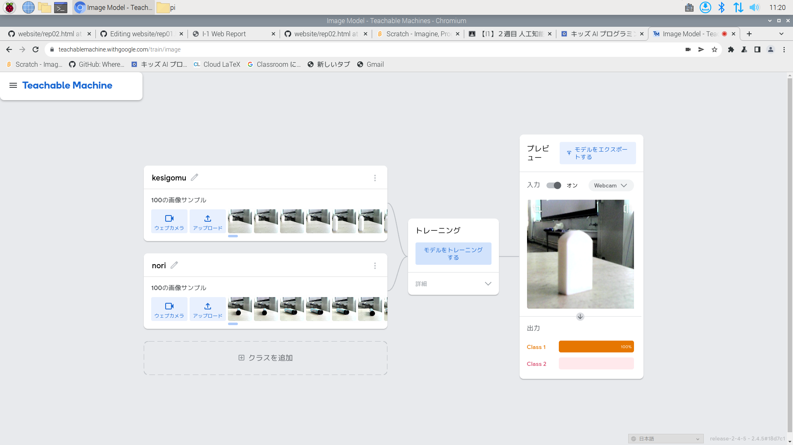

公大高専１年実習I-1レポート
3組7番 岡村優希
第1週目
2-1 レポートをHTMLで作る
１週目のレポート
1.内容
rep01.htmlの内容を変更して、レポートを作成した。
2.感想
本文の作成と画像の貼り付けができた。本文が長くなってしまったので、見様見真似で改行をしてみた。
2-2 機械学習体験

1.内容
Teachable Machinesで機械学習を体験した。今回は消しゴムとスティックのりの判定をさせた。
それぞれの物体の画像データを100枚ほど用意して、読み込ませた。
2.感想
機械学習については知っていましたが、このようにウェブカメラを使用してたくさんの画像データを用意して、
読み込ませて実行することは初めての体験だったので楽しかった。